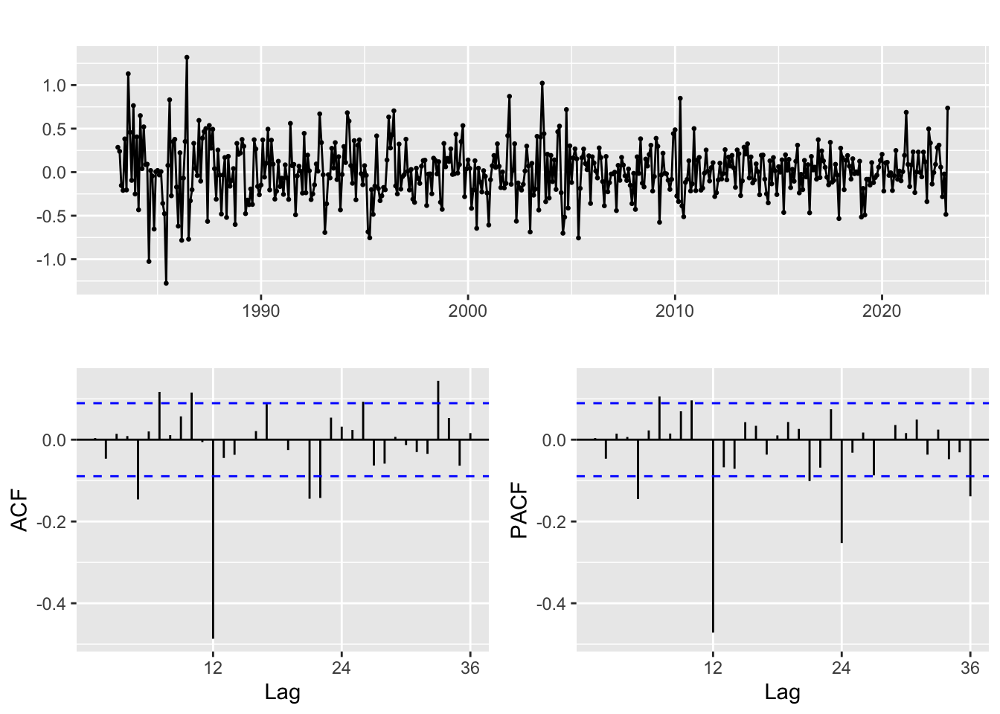

ARMA/ARIMA/SARIMA Models
Stationarity
First difference works well for my data set, the second and third difference may cause over differencing.
Augmented Dickey-Fuller Test
data: diff(emp_ts)
Dickey-Fuller = -5.1868, Lag order = 6, p-value = 0.01
alternative hypothesis: stationaryP-value is smaller than 0.05. We have enough evidence to reject the null hypothesis at 5% significance level. So the ADF test thought the series is stationary.
ACF/PACF
p = 1; q = 1
ARIMA Model Fitting
| p | d | q | AIC | BIC | AICc |
|---|---|---|---|---|---|
| 1 | 1 | 1 | -1666.538 | -1656.097 | -1666.437 |
| 1 | 1 | 2 | -1665.441 | -1651.519 | -1665.271 |
| 1 | 1 | 3 | -1664.501 | -1647.097 | -1664.244 |
| 2 | 1 | 1 | -1665.303 | -1651.380 | -1665.133 |
| 2 | 1 | 2 | -1663.992 | -1646.589 | -1663.735 |
| 2 | 1 | 3 | -1665.338 | -1644.454 | -1664.978 |
| 3 | 1 | 1 | -1664.659 | -1647.256 | -1664.403 |
| 3 | 1 | 2 | -1664.962 | -1644.078 | -1664.602 |
| 3 | 1 | 3 | -1663.348 | -1638.984 | -1662.865 |
| NA | NA | NA | NA | NA | NA |
p d q AIC BIC AICc
1 1 1 1 -1666.538 -1656.097 -1666.437 p d q AIC BIC AICc
1 1 1 1 -1666.538 -1656.097 -1666.437 p d q AIC BIC AICc
1 1 1 1 -1666.538 -1656.097 -1666.437AIC, BIC, AICc suggest ARIMA(1, 1, 1) is the best model.
Series: emp_ts
ARIMA(1,1,1)
Coefficients:
ar1 ma1
0.5917 -0.4420
s.e. 0.3558 0.4005
sigma^2 = 5.58e-05: log likelihood = 836.27
AIC=-1666.54 AICc=-1666.44 BIC=-1656.1
Training set error measures:
ME RMSE MAE MPE MAPE
Training set -8.981908e-05 0.007423551 0.003284021 -0.001143603 0.04134745
MASE ACF1
Training set 0.1359915 0.01066391Equation:
\[x_t = 2.24x_{t-1} - 0.73x_{t-2} - 1.27x_{t-3} + 0.76x_{t-4} + w_t - 2.96w_{t-1} + 2.96w_{t-2} - w_{t-3}\]
Model Diagnostic
From the model diagnostic chart above, we can observe that the standardized residuals are similar to white noise, both the residual plot and Q-Q plot suggests the residuals of the fitted model are normally distributed. Also, both the p-value for Ljung-Box statistics and the ACF of residuals all falls within the confidence interval. We could say that the ARIMA(1, 1, 1) model fits the data set well!
auto.arima
Series: emp_ts
ARIMA(0,2,2)
Coefficients:
ma1 ma2
-0.8254 -0.1473
s.e. 0.0648 0.0646
sigma^2 = 5.644e-05: log likelihood = 830.64
AIC=-1655.29 AICc=-1655.19 BIC=-1644.86The result from auto.arima function is different. However, I’m pretty condident about my model above since AIC, AICc, and BIC have a relatively low value comparing to the model suggested by auto.arima function.
Forecast
we get a reasonable forecast, however, we should try SARIMA model as well.
Benchmark Method Comparison
ME RMSE MAE MPE MAPE
Training set -8.981908e-05 0.007423551 0.003284021 -0.001143603 0.04134745
MASE ACF1
Training set 0.1359915 0.01066391 ME RMSE MAE MPE MAPE MASE
Training set -1.01924e-16 0.05594163 0.04929746 -0.004927857 0.618662 2.04141
ACF1
Training set 0.9780381 ME RMSE MAE MPE MAPE
Training set -0.0001689599 0.007548654 0.003509744 -0.002142445 0.04417974
MASE ACF1
Training set 0.1453387 0.1739657 ME RMSE MAE MPE MAPE MASE
Training set -0.001233452 0.03526145 0.02414872 -0.01630537 0.3034857 1
ACF1
Training set 0.9514107 ME RMSE MAE MPE MAPE
Training set -0.0001689599 0.007548654 0.003509744 -0.002142445 0.04417974
MASE ACF1
Training set 0.1453387 0.1739657Both the viz and accuracy metric suggest my model is better than those benchmark methods.
SARIMA Model Fitting
Since the employment data set I’m using doesn’t not contain seasonality as it’s seasonal adjusted. So, I would use real interest rate data set as the source data for SARIMA model since interest rate is related to the employment.
Show the code
ir_ts %>%
decompose(type = c("additive", "multiplicative")) %>%
autoplot()
After ordinary and seasonal differencing, we can tell that p should be 0, d should be 1, q should be 0, P should be 1, D should be 1, Q should be 1, 2, 3
p d q P D Q AIC BIC AICc
1 0 1 0 1 1 1 -32.91451 -20.380674 -32.86430
2 0 1 0 1 1 2 -30.96887 -14.257090 -30.88501
3 0 1 0 1 1 3 -28.90980 -8.020084 -28.78375
4 0 1 0 2 1 1 -30.93132 -14.219544 -30.84746
5 0 1 0 2 1 2 -28.91719 -8.027466 -28.79114
6 0 1 1 1 1 1 -31.63568 -14.923904 -31.55182
7 0 1 1 1 1 2 -29.70612 -8.816396 -29.58007
8 0 1 1 2 1 1 -29.65553 -8.765810 -29.52948
9 0 1 2 1 1 1 -31.01094 -10.121217 -30.88489
10 1 1 0 1 1 1 -31.55578 -14.844000 -31.47192
11 1 1 0 1 1 2 -29.62690 -8.737177 -29.50085
12 1 1 0 2 1 1 -29.57622 -8.686497 -29.45017
13 1 1 1 1 1 1 -29.06174 -8.172018 -28.93569
14 2 1 0 1 1 1 -31.09532 -10.205603 -30.96927 p d q P D Q AIC BIC AICc
1 0 1 0 1 1 1 -32.91451 -20.38067 -32.8643 p d q P D Q AIC BIC AICc
1 0 1 0 1 1 1 -32.91451 -20.38067 -32.8643 p d q P D Q AIC BIC AICc
1 0 1 0 1 1 1 -32.91451 -20.38067 -32.8643The AIC, BIC, AICc scores all suggests SARIMA(0, 1, 0) * (1, 1, 1) model.
Series: ir_ts
ARIMA(0,1,0)(1,1,1)[12]
Coefficients:
sar1 sma1
-0.0354 -0.9385
s.e. 0.0513 0.0288
sigma^2 = 0.05136: log likelihood = 19.46
AIC=-32.91 AICc=-32.86 BIC=-20.38
Training set error measures:
ME RMSE MAE MPE MAPE MASE
Training set 0.01865717 0.2231673 0.16551 3.801952 29.13172 0.2955925
ACF1
Training set -0.04271696Forecast
Benchmark Method Comparison
ME RMSE MAE MPE MAPE MASE
Training set 0.01865717 0.2231673 0.16551 3.801952 29.13172 0.2955925
ACF1
Training set -0.04271696 ME RMSE MAE MPE MAPE MASE ACF1
Training set 2.580427e-16 1.86868 1.543425 101.5844 567.5626 2.756479 0.9851519 ME RMSE MAE MPE MAPE MASE
Training set -0.01125957 0.2227021 0.1684397 2.277912 27.82212 0.3008247
ACF1
Training set -0.02748644 ME RMSE MAE MPE MAPE MASE ACF1
Training set -0.1373641 0.7155465 0.5599264 8.369501 87.15671 1 0.8880544 ME RMSE MAE MPE MAPE MASE
Training set -0.01125957 0.2227021 0.1684397 2.277912 27.82212 0.3008247
ACF1
Training set -0.02748644Both the viz and accuracy metric suggest my model is better than those benchmark methods.
Cross Validation
1 step ahead
Jan Feb Mar Apr May
1982 5.583287521 5.055632821 5.334986621 5.246680361 5.272018091
1983 3.788344321 3.500477921 3.626761891 3.329032981 3.736197691
1984 4.027657551 4.389218821 4.555388191 4.778104361 5.272407781
1985 3.942457281 4.310475261 4.118027491 3.864126011 3.082644751
1986 2.550519861 2.135821501 1.874944361 1.973229771 2.511123261
1987 1.505220801 1.481424901 1.686838621 2.286353851 2.259052111
1988 2.025008581 1.969377511 2.343195931 2.422911201 2.577520131
1989 2.658519271 2.900361721 2.797689491 2.556301941 2.337805091
1990 2.293566841 2.478607071 2.478801411 2.731701211 2.309250601
1991 1.833693271 2.102475631 2.036472551 1.976555761 2.114283711
1992 1.554931041 1.586904431 1.716499321 1.672809421 1.495216111
1993 0.931424691 0.600064381 0.701156381 0.591360071 0.687876791
1994 0.546808201 0.897842501 1.585822231 1.551216541 1.520204971
1995 1.981636181 1.647625021 1.581566751 1.347120251 0.831352321
1996 0.524498171 0.823933051 1.034973871 1.231665321 1.420719741
1997 1.140014341 1.235195251 1.477112821 1.363620621 1.205747771
1998 0.703708361 0.779151411 0.772704981 0.819681731 0.797636901
1999 0.294229641 0.636998261 0.604429381 0.630877501 1.043202561
2000 1.439982841 1.366986811 1.129606101 1.287170551 1.054532351
2001 0.193653431 0.193934181 0.147623361 0.360057421 0.453095471
2002 0.326712881 0.347929631 0.627765771 0.277189381 0.246503361
2003 -0.606981549 -0.849769599 -0.763742079 -0.702639569 -1.168244809
2004 -0.501779809 -0.603195889 -0.715211139 -0.190115389 -0.126784439
2005 -0.260201429 -0.094019439 -0.052833709 -0.283494869 -0.406472439
2006 0.131052231 0.310260331 0.285032481 0.333009601 0.377449311
2007 0.213790361 -0.048374149 0.004126301 -0.041516349 0.172949181
2008 -0.962237689 -1.048140469 -1.010466329 -0.672844259 -0.585806539
2009 -1.034054059 -0.822618779 -1.360540879 -1.055949649 -0.751255009
2010 -0.948845139 -1.074629019 -0.764255249 -0.846972689 -1.053999569
2011 -1.243673369 -1.199509669 -1.095857719 -1.361885709 -1.581093559
2012 -2.051509519 -1.904123639 -1.878714819 -2.160582529 -2.121511599
2013 -1.901260369 -2.023019829 -2.097572429 -2.092751779 -1.845666799
2014 -1.564683239 -1.492907369 -1.371138449 -1.446506399 -1.448831109
2015 -1.534980169 -1.321655129 -1.663038029 -1.539439109 -1.519582749
2016 -1.534622549 -1.521953129 -1.728087869 -1.659710719 -1.554262029
2017 -1.298978969 -1.156857529 -1.307606769 -1.296951749 -1.337249199
2018 -0.984891259 -1.043824719 -1.059006219 -0.857268749 -0.827632409
2019 -1.005177699 -1.556152899 -1.653056799 -1.532931749 -1.652058929
2020 -1.757374759 -2.201197999 -2.184954969 -2.101217069 -2.227059909
2021 -2.304184349 -2.060853679 -1.955313609 -2.036412969 -2.079025399
2022 -1.631767659 -1.726270629 -1.123960279 -0.869462789 -1.048267039
2023 -0.653158379 -0.011847659 NA
Jun Jul Aug Sep Oct
1982 5.485626071 4.806437591 4.433864341 4.205801631 3.552853681
1983 3.745218551 4.196061231 4.281664301 3.959332781 4.070577371
1984 5.372783731 4.797788121 4.902293601 4.535492711 3.993120891
1985 3.260567801 3.516757591 3.349913551 3.334334741 3.169130251
1986 1.919667301 1.847220151 1.478365871 1.793694041 1.670525841
1987 2.204168071 2.406871211 2.530839661 2.885881261 2.452071161
1988 2.361992201 2.469384271 2.634499701 2.388633361 2.285361631
1989 1.929315681 1.665992181 2.203710881 2.223822781 1.956774401
1990 2.268457951 2.097171521 2.325384151 2.127178471 1.985494431
1991 2.148893201 2.066556841 1.805135001 1.564501511 1.491697171
1992 1.279738891 1.051462051 0.883981811 0.654683201 1.251272791
1993 0.518438231 0.629542521 0.377220141 0.325482641 0.488934781
1994 1.713058851 1.506923501 1.563743951 1.883262521 2.029892201
1995 0.864669611 1.075127891 0.944238011 0.936368851 0.810863861
1996 1.295900001 1.256054831 1.447461541 1.244988921 1.068286201
1997 1.126515871 1.015151351 1.077508971 0.943230191 0.899596281
1998 0.697345161 0.705979631 0.422878661 -0.138215079 0.147669931
1999 0.932201251 1.028182761 1.096104881 1.069561311 1.073892981
2000 0.988994301 0.972252731 0.812635631 0.803265041 0.759777381
2001 0.455006891 0.261000871 0.104407421 -0.086428099 -0.258595019
2002 0.068568001 -0.331097959 -0.627252299 -0.804664909 -0.677773739
2003 -0.944671589 -0.321656089 -0.176122299 -0.692541189 -0.359458899
2004 -0.139561929 -0.217557859 -0.588668909 -0.386254249 -0.465671789
2005 -0.253339469 -0.065143779 -0.337670379 -0.106315709 0.002328461
2006 0.422988981 0.224925551 0.132696641 0.138701521 0.126524851
2007 0.300212871 0.060520221 -0.127137969 -0.084246329 -0.247113429
2008 -0.627779459 -0.716863219 -0.833785829 -0.588297239 -0.441732009
2009 -0.806457729 -0.914320179 -1.124122909 -1.076219389 -1.011950509
2010 -1.226601479 -1.417196659 -1.496292799 -1.664555299 -1.734470989
2011 -1.499408199 -1.678385639 -1.858421669 -1.974798059 -1.936291019
2012 -2.128186579 -2.133445329 -2.242617689 -2.166532789 -2.079097599
2013 -1.526979509 -1.598291859 -1.532526039 -1.580391129 -1.583722809
2014 -1.482365599 -1.423954849 -1.492500619 -1.372395849 -1.360060289
2015 -1.406285649 -1.525054989 -1.560900639 -1.544588839 -1.407154849
2016 -1.908013609 -1.846523089 -1.857286249 -1.783563739 -1.726751219
2017 -1.348344429 -1.402500389 -1.508147909 -1.344217039 -1.321170099
2018 -0.918126839 -0.818118929 -0.941213649 -0.773233739 -0.764702199
2019 -1.632788669 -1.653308759 -1.838355029 -1.705036019 -1.639748699
2020 -2.418705049 -2.480494549 -2.416697479 -2.365098999 -2.287316189
2021 -2.038319469 -2.334379339 -2.268091419 -1.985459409 -1.909362669
2022 -1.011185619 -1.217735249 -0.869111869 -0.276028519 -0.142647499
2023
Nov Dec
1982 3.808370871 3.470028951
1983 4.075063991 4.141943941
1984 4.002264561 4.088540021
1985 3.007408971 2.473824711
1986 1.470373811 1.531205181
1987 2.505914961 2.532025011
1988 2.544578171 2.789833161
1989 1.956305281 2.054262851
1990 1.820560151 1.849570601
1991 1.336972911 1.125181901
1992 1.436324881 1.194547911
1993 0.646755921 0.699324381
1994 2.043592521 2.170929671
1995 0.648792911 0.574231421
1996 0.877574561 1.181507251
1997 0.846490491 0.766941081
1998 0.156219261 0.234791901
1999 1.118842951 1.337690571
2000 0.565849871 0.178072391
2001 -0.032784249 0.450139411
2002 -0.381106889 -0.585158809
2003 -0.359787889 -0.371406189
2004 -0.163823929 -0.294084649
2005 -0.055013279 -0.008518829
2006 0.048777231 0.074715241
2007 -0.686391739 -0.673869869
2008 -1.097980699 -1.134819509
2009 -1.225319989 -0.775435689
2010 -1.447151279 -1.209383389
2011 -1.928892239 -1.927260039
2012 -2.245737999 -1.988959129
2013 -1.655060619 -1.392723839
2014 -1.688635179 -1.363417749
2015 -1.425938319 -1.338854579
2016 -1.372903969 -1.347709479
2017 -1.500311319 -1.199572539
2018 -0.818393889 -1.032926209
2019 -1.559095619 -1.568264239
2020 -2.305682009 -2.308377759
2021 -1.981671379 -1.753865449
2022 -0.497235399 -0.290261579
2023 MAE
[1] 0.3754496